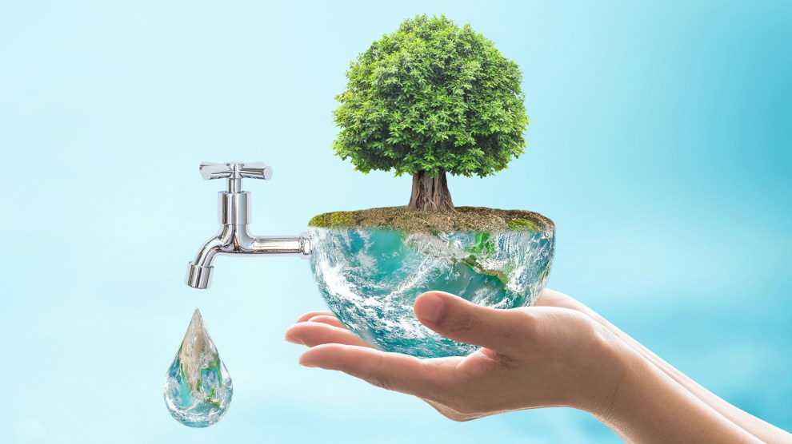

<ion-view class="fondo1"view-title="Dashboard">
  <ion-content class="fondo1" class="padding">
  <br><br><br>
  <div class="row">
    <div class="col">  <div class="card">
      <input type="checkbox" name="">
      <div class="toggle">+</div>
      <div class="imgBx">
      
      </div>
      <div class="details"><h1>importancia del agua</h1> <br>     
      <p>El agua es un elemento de la naturaleza, integrante de los ecosistemas naturales, fundamental para el sostenimiento y la reproducción de la vida en el planeta ya que constituye un factor indispensable para el desarrollo de los procesos biológicos que la hacen posible. </p></div>
    </div>
    </div>
  <div class="col"><br>
      <main>
    <div class="contenedor">
      <video class="fm-video video-js vjs-16-9 vjs-big-play-centered" data-setup="{}" controls id="fm-video">
        <source src="video/sinmenciones.mp4" type="video/mp4">
      </video>
  
    </div>
  </main>

  <script>
    var reproductor = videojs('fm-video', {
      fluid: true
    });
  </script>
  </ion-content>
</ion-view>
